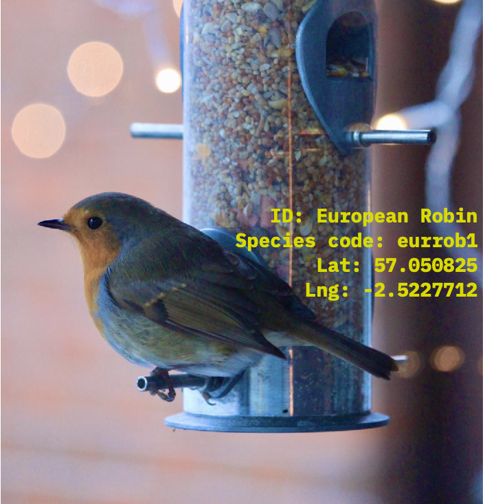
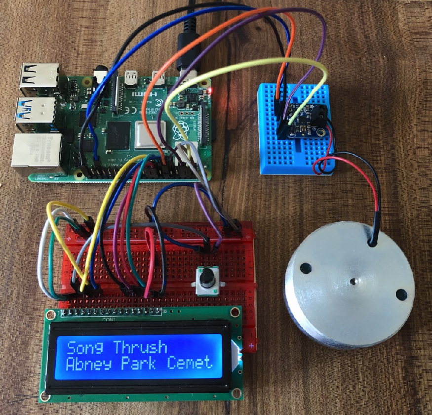

I spent the first four months of the pandemic sheltering with family in the north-east of Scotland where I was born. My family live on the edge of a dense pine forest that provided an escape from excessive screen time and unsettling information. Within the forest I became accustomed to identifying various birds by their song such as wood pigeons, robins, jays, magpies, buzzards and owls.

Bird sighting logged to eBird
On returning to the city and a regular work schedule, I wanted to continue enjoying ad-hoc encounters with birds and constructed an audio device to play birdsong in my apartment. A script on my Raspberry Pi regularly checks for birds recently spotted in the UK and logged by citizen scientists to the eBird platform and plays their song through a surface transducer. Whilst I enjoyed the randomness of listening to out-of-context birdsong, I grew impatient with the lack of information provided by these sound clips and sought to build a deeper connection to the locality of these birds.

Bird song audio device
Inspired by CAPTCHA systems used to train machine learning algorithms to recognise Google street-view objects, I built a simple Chrome extension to help me recognise the song of different species of bird recently spotted near the streets and walkways across the UK. The extension randomly appears as a pop-up throughout the day and encourages me to guess the species of bird through listening to its song and exploring its location. Panoramas are downloaded via the Google Maps Javascript API allowing me to wander through each location before submitting my answer. This extension is helping me to build a general awareness of the UK’s green spaces and nature whilst I’m logged on. I’m continuing to explore what other kinds of browser based exploration I could build via maps, sound libraries and other objects tagged with geospatial data.